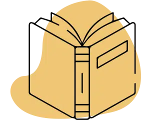
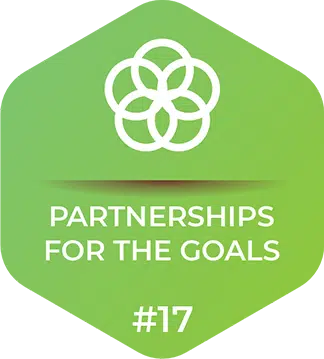

Work as a catalyst
Work as a catalyst in bringing sustainable change in the lives of lesser privileged children and families with a life-cycle approach of development
Enable civil society
Enable the civil society across the world to engage proactively in the change process through the philosophy of civic driven change

Adopt highest standards
Adopt highest standards of governance to emerge as a leading knowledge and technology driven, innovative and scalable development institution